Department of Psychology University of Edinburgh 2025–2026
Course Overview
Introduction to Linear Models
Intro to Linear Regression
Interpreting Linear Models
Testing Individual Predictors
Model Testing & Comparison
Linear Model Analysis
Analysing Experimental Studies
Categorical Predictors & Dummy Coding
Effects Coding & Coding Specific Contrasts
Assumptions & Diagnostics
Bootstrapping
Categorical Predictor Analysis
Interactions
Interactions I
Interactions II
Interactions III
Analysing Experiments
Interaction Analysis
Advanced Topics
Power Analysis
Binary Logistic Regression I
Binary Logistic Regression II
Logistic Regression Analysis
Exam Prep and Course Q&A
This week’s learning objectives
What does a linear model assume is true about the data that it models? (Four assumptions)
What three properties of a single data point might affect a linear model’s estimates? How can we diagnose each property?
What relationship between predictors do we want to avoid? How can we diagnose it?
Big picture: Why does a model make assumptions?
Why does a model make assumptions?
When we use any statistical model, we are saying “This model is the process that I think the world used to generate my data.”
Linear models are constrained in certain ways: for example, associations between predictors and outcomes can only be linear.
These constraints are the assumptions that the linear model makes about how the data was generated.
Assumptions
What a linear model assumes about the data
Assumption
Looks fine
Suspicious
L
Linearity: The association between predictor and outcome is a straight line.
I
Independence: Every data point's error is independent of every other data point's error. (Until DAPR3, we'll assume this is true as long as we have between-participant data.)
N
Normally-distributed errors: The differences between fitted line and each data point (i.e., the residuals) follow a normal distribution.
E
Equal variance of errors: The differences between fitted line and each data point (i.e., the residuals) are dispersed by a similar amount across the whole range of the predictor.
L is for linear association
L: The association between predictor and outcome is linear
Checking linearity with one predictor
Make a scatterplot with a straight line and a “LOESS” line (LOcally Estimated Scatterplot Smoothing).
The linear variable:
df_nonlin |>ggplot(aes(x=x1, y=y)) +geom_point(size =5) +geom_smooth(method ='lm',colour ='blue', se =FALSE, linewidth =3) +geom_smooth(method ='loess',colour ='red', se =FALSE, linewidth =3)
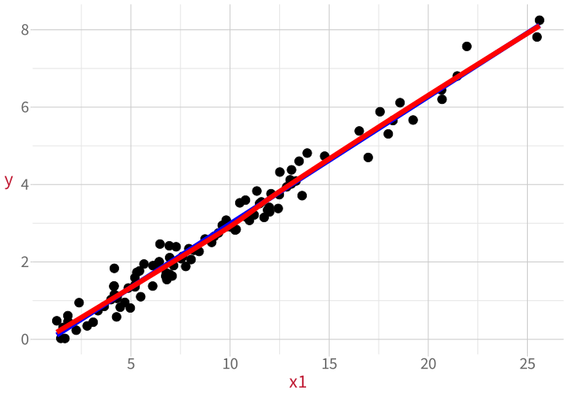
The non-linear variable:
df_nonlin |>ggplot(aes(x=x2, y=y)) +geom_point(size =5) +geom_smooth(method ='lm',colour ='blue', se =FALSE, linewidth =3) +geom_smooth(method ='loess',colour ='red', se =FALSE, linewidth =3)
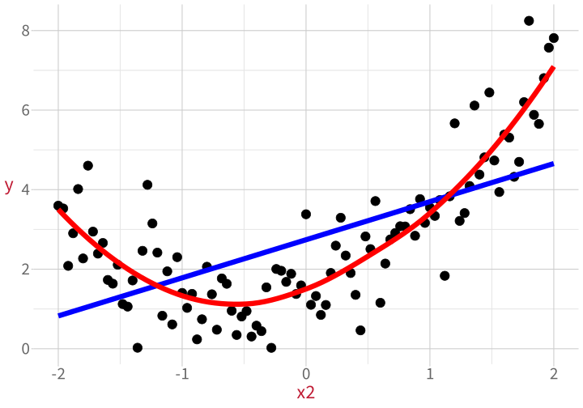
You want the LOESS line (method = 'loess', red) to stick close to the straight line (method = 'lm', blue). Deviations suggest non-linearity.
Checking linearity with >1 predictor
With multiple predictors, we need to get slightly more complex.
Now we to hold the other predictors constant while we look at each one in turn.
The solution: Component+residual plots (aka “partial-residual plots”).
Component: The association between one particular predictor and the outcome, with all the other predictors held constant.
In other words, each predictor’s contribution to the overall linear model.
Residual: The differences between the line the model predicts and the actual observed data points.
Basically, CR plots can look at the linearity of each predictor without any of the other predictors getting in the way.
Checking linearity with >1 predictor
A component-residual plot shows:
x axis: a predictor across its full range
y axis: that predictor’s component + each data point’s residual
m1 <-lm(y ~ x1 + x2, data = df_nonlin)car::crPlots(m1)
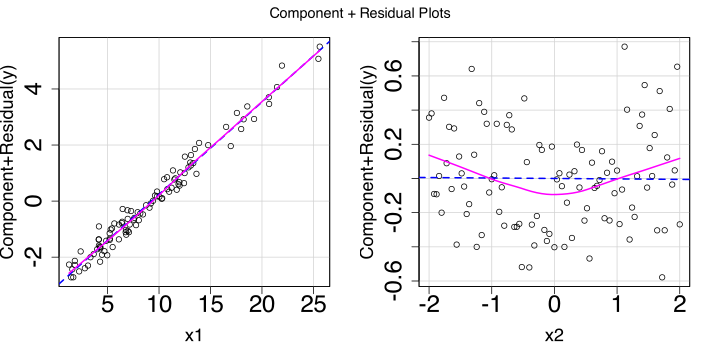
Again, we want the LOESS line to match the straight line as closely as possible. Deviations suggest non-linearity.
How much of a deviation is a problem? This is kind of a judgement call. Some deviation is normal.
What to do if a predictor is not linear
In order of increasing spiciness:
Keep the variable as-is and report the non-linearity in your write-up. A good solution if the deviation isn’t huge.
Transform the variable until it looks more linear (e.g., what if you take the exponential with exp()? the logarithm with log()?)
Beyond DAPR3: You can use so-called “higher-order” regression terms, which let you model particular kinds of curves (quadratic functions, cubic functions, etc.).
Beyond DAPR3: You can capture basically any non-linear relationship using “generalised additive models” (GAMs).
What a linear model assumes about the data
Assumption
Looks fine
Suspicious
L
Linearity: The association between predictor and outcome is a straight line.
I
Independence: Every data point's error is independent of every other data point's error. (Until DAPR3, we'll assume this is true as long as we have between-participant data.)
N
Normally-distributed errors: The differences between fitted line and each data point (i.e., the residuals) follow a normal distribution.
E
Equal variance of errors: The differences between fitted line and each data point (i.e., the residuals) are dispersed by a similar amount across the whole range of the predictor.
I is for independence of errors
I: Independence of errors
The most common source of non-independence is when multiple observations are gathered from the same source.
For example:
many test scores gathered from the same schools,
many reaction times gathered from the same participants,
and so on.
Until DAPR3, you can assume that errors are independent as long as the experimental design is between-subjects (i.e., as long as each person only contributes data to one experimental condition).
What to do if errors are non-independent
In order of increasing spiciness:
Keep the variable as-is and report the non-independence in your write-up.
In DAPR3, you’ll learn how to tell a model that some data points probably behave more like one another than they behave like others by including so-called “random effects”.
What a linear model assumes about the data
Assumption
Looks fine
Suspicious
L
Linearity: The association between predictor and outcome is a straight line.
I
Independence: Every data point's error is independent of every other data point's error. (Until DAPR3, assume this is true as long as you have between-participant data.)
N
Normally-distributed errors: The differences between fitted line and each data point (i.e., the residuals) follow a normal distribution.
E
Equal variance of errors: The differences between fitted line and each data point (i.e., the residuals) are dispersed by a similar amount across the whole range of the predictor.
N is for normally-distributed errors
N: Normally-distributed errors
The differences between the fitted line and each data point (aka the residuals) should be normally-distributed.
To check normality of errors
Before there can be any residuals, there must be a fitted line.
So first, fit a model.
m_norm <-lm( y_norm ~ x, data = df_nonnorm)
m_nonnorm <-lm( y_nonnorm ~ x, data = df_nonnorm)
Now we have a couple of options:
A histogram of residuals
A Q-Q plot
1. To check normality of errors: Histogram
With a histogram of the residuals, we can eyeball how normally-distributed they appear.
Very right-skewed! This is not a normal distribution.
2. To check normality of errors: Q-Q plots
We can compare the model’s residuals to what the residuals WOULD look like in a world where they were perfectly normally-distributed.
This is what a “quantile-quantile plot”, a Q-Q plot, does. The dots should follow the diagonal line.
Normally-distributed errors:
plot(m_norm, which =2)
A few small divergences at the extremes.
Non-normally-distributed errors:
plot(m_nonnorm, which =2)
Bottom left and top right diverge a lot!
A perfect match to the diagonal is rare. Ask: How big is the mismatch?
What to do if errors are not normal
If errors aren’t normally distributed, then a model which assumes they are will produce weird (aka biased) estimates:
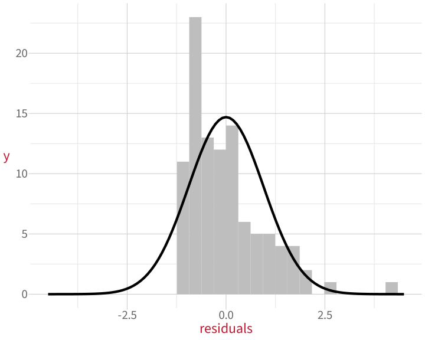
Next week: we’ll learn how to get around this problem using a method called bootstrapping.
What a linear model assumes about the data
Assumption
Looks fine
Suspicious
L
Linearity: The association between predictor and outcome is a straight line.
I
Independence: Every data point's error is independent of every other data point's error. (Until DAPR3, assume this is true as long as you have between-participant data.)
N
Normally-distributed errors: The differences between fitted line and each data point (i.e., the residuals) follow a normal distribution.
E
Equal variance of errors: The differences between fitted line and each data point (i.e., the residuals) are dispersed by a similar amount across the whole range of the predictor.
E is for equal variance of errors
E: Equal variance of errors
Equal variance of errors is also called “homoscedasticity” (homo = same).
Unequal variance of errors is also called “heteroscedasticity” (hetero = different).
When variance if errors is not equal, the model is not equally good at estimating the outcome for all values of the predictor.
To check equal variance of errors
Again, to find the residuals—the differences between the fitted line and each data point—we need a fitted line.
So first, fit a model.
m_equal <-lm( y_equal ~ x, data = df_unequal)
m_unequal <-lm( y_unequal ~ x, data = df_unequal)
Investigate by plotting the residuals against the predicted outcome values (also called the “fitted” values).
To check equal variance of errors
A plot of residuals vs. predicted values shows:
x axis: the predicted outcome values (aka the “fitted values” across their whole range).
y axis: the residuals of each data point.
Errors with equal variance
plot(m_equal, which =1)
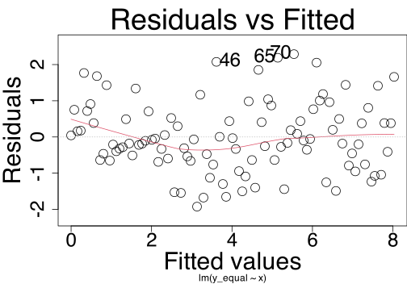
Errors with unequal variance
plot(m_unequal, which =1)
What we want to see:
A solid line which matches the horizontal dotted line, AND
A random-looking cloud of data points
What to do if errors don’t have equal variance
In order of increasing spiciness:
Keep the variable as-is and report the non-equal variance in your write-up.
Include additional predictors or interaction terms (more on interactions next semester). These may help account for some of that extra variance.
Use weighted least squares regression (WLS) instead of ordinary least squares (OLS). More details in this week’s flash cards.
What a linear model assumes about the data
Assumption
Looks fine
Suspicious
L
Linearity: The association between predictor and outcome is a straight line.
I
Independence: Every data point's error is independent of every other data point's error. (Until DAPR3, assume this is true as long as you have between-participant data.)
N
Normally-distributed errors: The differences between fitted line and each data point (i.e., the residuals) follow a normal distribution.
E
Equal variance of errors: The differences between fitted line and each data point (i.e., the residuals) are dispersed by a similar amount across the whole range of the predictor.
Checking assumptions is not an absolute science. It relies on intuitions and vibes (sorry!!)
\(\rightarrow\) Look at the plots, motivate your reasoning, and you’ll be fine.
Diagnostics
Diagnostics to run on the data
Diagnosing unusual properties of individual data points (aka “case diagnostics”):
Outlyingness
High leverage
High influence
Diagnosing undesirable relationships between predictors:
Multicollinearity
1. Outlyingness
1. Outlyingness
An outlier is a data point whose value for the outcome variable is unusually extreme.
The outcome is usually plotted on the y axis, so outliers are usually weird in the vertical direction (↕).
“Unusually extreme” for the model, not necessarily for the overall distribution of data!
Goal: Find unusually big residuals
Residuals extracted from the linear model are on the scale of the outcome. For example:
Model A measures height in cm, so residuals are in cm.
Model B measures log reaction time, so residuals are in log units.
The scales of these residuals will be totally different. No single threshold for outliers will work for cm AND log units AND yards AND millions of pounds AND …
\(\downarrow\)
Standardised residuals convert residuals from their original scale into z-scores.
Now the residuals of Models A and B are on the same scale.
But to get z-scores, we compare each data point to the mean and SD of all data points.
The mean and SD will be affected by our potential outliers, so we’re slightly comparing a data point to itself.
\(\downarrow\)
Studentised residuals are a version of standardised residuals that exclude the specific data point we’re looking at.
To check outlyingness: Studentised residuals
You might recognise “Student” from “Student’s t-test”.
Studentised residuals are a kind of residual that follows a t-distribution.
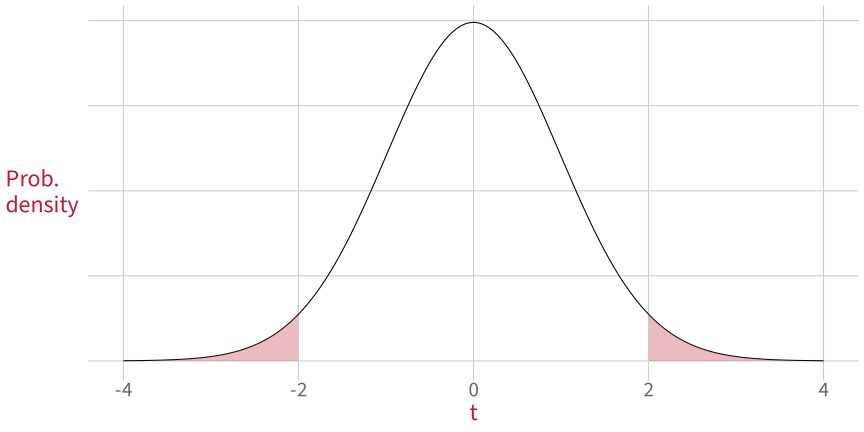
If you see data points with studentised residuals less than –2 or more than 2:
you might have an outlier.
But also, 5% of the time, we would actually expect to have values outside of this range.
A value less than –2 or more than 2 is a necessary but not sufficient condition.
\(\rightarrow\) The more extreme the studentised residual, the more likely it is that the data point is an outlier.
Studentised residuals in R
Once we’ve fit a model, we can use the rstudent() function to get all the studentised residuals.
m_outl <-lm(y_outl ~ x, data = df_outl)rstudent(m_outl) |>head()
# A tibble: 4 x 3
x y_outl stud_resid
<dbl> <dbl> <dbl>
1 -1.28 3.95 2.15
2 0.44 2.53 -2.24
3 1.76 1.24 -7.02
4 1.8 9.56 2.07
We expected one outlier.
But it looks like we have four…?
Studentised residuals can give us “false alarms”
Studentised residuals for the data without outliers:
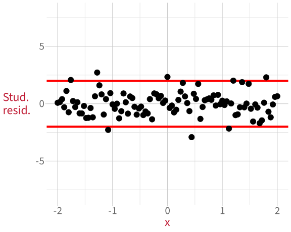
Studentised residuals for the data with one outlier:
A value more extreme than \(\pm\) 2 does not necessarily mean the data point is an outlier.
We would expect extreme values 5% of the time.
\(\rightarrow\) The more extreme the studentised residual, the more likely it is that the data point is an outlier.
What to do if we have an outlier
We’ll talk in detail about how to deal with unusual data points after we’ve looked at all three kinds.
Preview:
Mention the unusual data points in the written analysis report.
Check if these data points affect the model’s estimates by running a sensitivity analysis.
More on that in a bit!
Diagnosing unusual data points
Unusual property of a data point
Looks fine
Suspicious
1. Outlyingness: Unusual value of the outcome (↕), when compared to the model.
2. High leverage: Unusual value of the predictor (↔︎), when compared to other predictor values.
3. High influence: High outlyingness and/or high leverage.
2. High leverage
2. High leverage
A data point with high leverage has an unusually extreme value for a predictor variable.
Predictors are usually plotted on the x axis, so high-leverage cases are usually weird in the horizontal direction (↔︎).
Can’t use residuals for high-leverage values, because residuals represent vertical (↕) distance.
Instead, for measuring horizontal (↔︎) distance: hat values.
To check leverage: Hat values
Hat values \(h\) are a standardised way of measuring how different a data point’s value is from other data points. (More mathy details are in the appendix of the slides.)
Step 1: Compute the mean hat value \(\bar{h}\) for a model with \(k\) predictors and \(n\) data points.
\[\bar{h} = \frac{k+1}{n}\]
Heuristic (= rule of thumb) for high leverage: data points with hat values larger than \(2 \times \bar{h}\).
For example, a model with one predictor (\(k=1\)) and 104 observations (\(n=104\)) has a mean hat value \(\bar{h}\) of:
Hat values for the data without high-leverage cases:
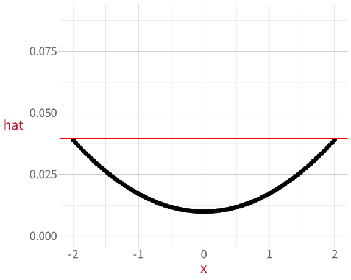
Hat values for the data with one high-leverage case:
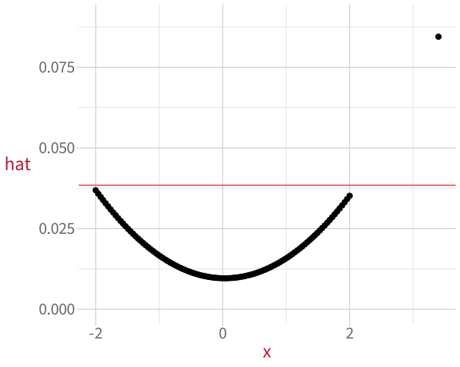
Why are the dots curved?
The curved shape happens because hat values measure distance from the mean of x.
The mean of x is 0, so all the data points on either side of 0 get bigger as they get farther away.
Diagnosing unusual data points
Unusual property of a data point
Looks fine
Suspicious
1. Outlyingness: Unusual value of the outcome (↕), when compared to the model.
2. High leverage: Unusual value of the predictor (↔︎), when compared to other predictor values.
3. High influence: High outlyingness and/or high leverage.
3. High influence
3. High influence
A data point with high influence has an unusually extreme value for the outcome variable and/or for a predictor variable. High influence points have the most potential to influence a linear model’s estimates.
High-influence cases can be weird (relative to the model) in both the vertical direction (↕) and/or the horizontal direction (↔︎).
Two measures to diagnose high influence:
Cook’s distance
COVRATIO
3.1. To check high influence: Cook’s distance
Interpretation: the average distance that the predicted outcome values will move, if a given data point is removed.
Cook’s distance is essentially outlyingness \(\times\) leverage (mathy details in appendix).
small outlyingness
x
small leverage
=
small influence
small outlyingness
x
BIG leverage
=
BIG influence
BIG outlyingness
x
small leverage
=
BIG influence
BIG outlyingness
x
BIG leverage
=
VERY BIG influence
A few possible threshold values for comparison:
1
4 divided by (sample size – number of predictors – 1) \(~~~\leftarrow\) we’ll use this one
visually compare to the Cook’s distance values of other data points
3.1. To check high influence: Cook’s distance
Step 1: Compute the threshold value of Cook’s distance for our model and data: \(n = 102\) data points, \(k = 1\) predictor.
In maths:
\[
\begin{align}
D &= \frac{4}{n-k-1}\\
D &= \frac{4}{102-1-1}\\
D &= \frac{4}{100}\\
D &= 0.04
\end{align}
\]
Step 3: Compare each data point’s \(D_i\) to the heuristic comparison value from Step 1.
# Add Cook's distance as column to dfdf_infl$D <-cooks.distance(m_infl)df_infl |>select(x, y_infl, D) |>filter(D > D_threshold)
# A tibble: 5 x 3
x y_infl D
<dbl> <dbl> <dbl>
1 -1.76 2.50 0.0499
2 -1.28 3.95 0.0578
3 -1.08 0.109 0.0404
4 1.8 9.56 0.0726
5 -1 6.5 0.165
We expected one high-influence value, but now we have five…?
Cook’s distance can give us “false alarms”
\(D\) for the data with no extreme high-influence values:
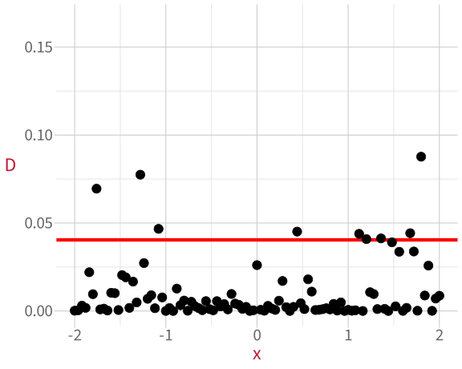
\(D\) for the data with one extreme high-influence value:
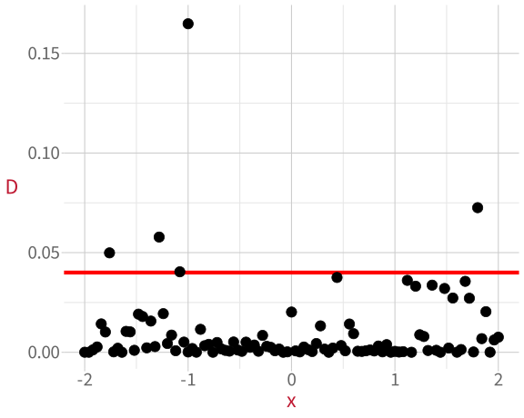
\(\rightarrow\) The more extreme the Cook’s distance, the higher the influence of that data point.
Cook’s distance looks at how each data point influences the model predictions overall.
The next measure, COVRATIO, looks at how each data point influences the regression coefficients (the slopes and intercepts).
3.2. To check high influence: COVRATIO
COVRATIO stands for “covariance ratio”.
Interpretation: how much a given data point affects the standard error (i.e., the variability) of the regression parameters.
A ratio is a fraction that compares two values.
\[
\text{COVRATIO}_i = \frac{\text{a parameter's standard error, including data point}\ i}{\text{a parameter's standard error, NOT including data point}\ i}
\]
If the given data point does not affect the standard error, then the ratio = 1.
If the SE gets bigger without a data point:
\[
\frac
{\text{small SE with}\ i}
{\text{big SE without}\ i}
= \frac{\text{small}}{\text{big}}
< 1
\]
If the SE gets smaller without a data point:
\[
\frac
{\text{big SE with}\ i}
{\text{small SE without}\ i}
= \frac{\text{big}}{\text{small}}
> 1
\]
Threshold values for a model with \(k\) parameters and \(n\) data points:
COVRATIO bigger than \(1+\frac{3(k + 1)}{n}\)
COVRATIO smaller than \(1-\frac{3(k + 1)}{n}\)
3.2. To check high influence: COVRATIO
Step 1: Compute the COVRATIO threshold value for our model and data: \(n=102\) data points, \(k=1\) predictor.
dfb.1_: difference between the predicted values for the intercept with and without this data point
dfb.x aka “dfbeta”: difference between the predicted values for a predictor’s slope with and without this data point (there will be one of these measures per predictor)
dffit: difference between predicted outcome values with and without this data point
cov.r: covariance ratio of regression parameters with and without this data point
cook.d: Cook’s Distance of this data point
hat: hat value of this data point
Vote: What to do if you find unusual data points
Ignore them and pretend they don’t exist?
Check if they could be a mistake?
Delete them?
Mention them in your write-up?
Replace them with less extreme values?
Check how much they influence your conclusions?
Sensitivity analysis
Sensitivity analysis
A sensitivity analysis asks: Do our conclusions change if we leave out the unusual data point(s)?
If our conclusions don’t change, then the data points don’t matter too much.
If our conclusions DO change, then we need to report that as a big limitation of our analysis.
Example 1:
Imagine we want to know whether there’s a significant positive association between x and y, but there’s a data point that we suspect might have high influence on our model.
One high-influence data point?
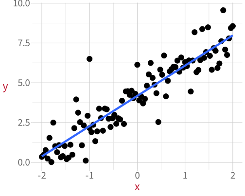
We try removing that data point to see what happens.
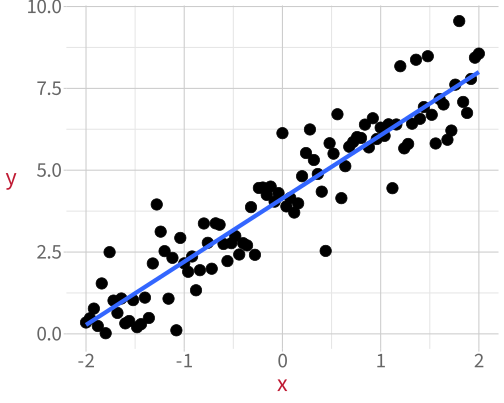
Sensitivity analysis
A model fit to the data that contains the high-influence value:
summary(m_infl)
Call:
lm(formula = y_infl ~ x, data = df_infl)
Residuals:
Min 1Q Median 3Q Max
-2.481 -0.626 -0.035 0.488 4.222
Coefficients:
Estimate Std. Error t value Pr(>|t|)
(Intercept) 4.1787 0.0962 43.4 <2e-16 ***
x 1.9007 0.0826 23.0 <2e-16 ***
---
Signif. codes: 0 '***' 0.001 '**' 0.01 '*' 0.05 '.' 0.1 ' ' 1
Residual standard error: 0.972 on 100 degrees of freedom
Multiple R-squared: 0.841, Adjusted R-squared: 0.839
F-statistic: 529 on 1 and 100 DF, p-value: <2e-16
A model fit to the data with the high-influence value removed:
summary(m_good)
Call:
lm(formula = y_good ~ x, data = df_outl)
Residuals:
Min 1Q Median 3Q Max
-2.4526 -0.5939 0.0037 0.5157 2.2888
Coefficients:
Estimate Std. Error t value Pr(>|t|)
(Intercept) 4.1369 0.0874 47.3 <2e-16 ***
x 1.9315 0.0749 25.8 <2e-16 ***
---
Signif. codes: 0 '***' 0.001 '**' 0.01 '*' 0.05 '.' 0.1 ' ' 1
Residual standard error: 0.878 on 99 degrees of freedom
Multiple R-squared: 0.87, Adjusted R-squared: 0.869
F-statistic: 664 on 1 and 99 DF, p-value: <2e-16
Even if we remove the data point, we still see a significant positive association between x and y.
\(\rightarrow\) The high-influence point doesn’t affect our conclusions, so it’s not a major cause for concern.
Sensitivity analysis: Example 2
Again, imagine we want to know whether there’s a significant positive association between x and y.
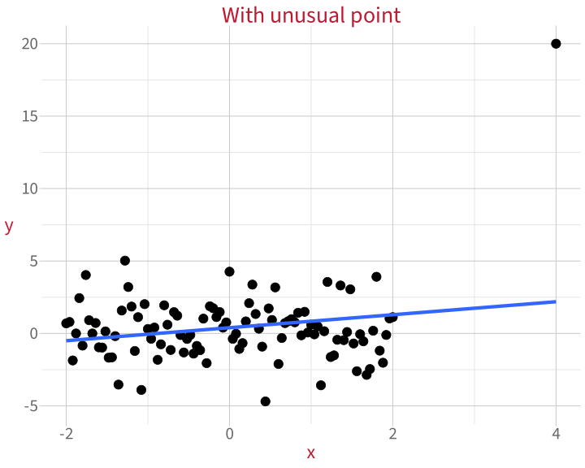
Coefficients:
Estimate Std. Error t value Pr(>|t|)
(Intercept) 0.395 0.259 1.53 0.130
x 0.448 0.211 2.12 0.036 *
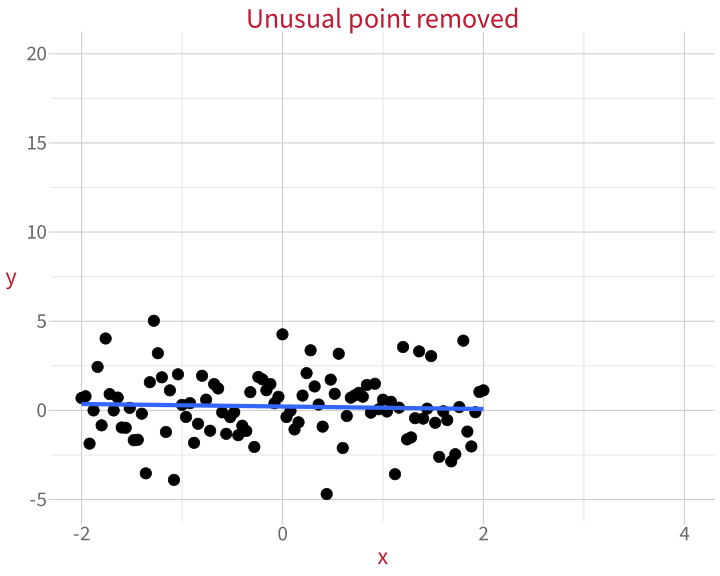
Coefficients:
Estimate Std. Error t value Pr(>|t|)
(Intercept) 0.2189 0.1804 1.21 0.23
x -0.0703 0.1547 -0.45 0.65
\(\rightarrow\) The high-influence point DOES affect our conclusions, so it IS a major problem for our analysis.
Diagnostics to run on the data
Diagnosing unusual properties of individual data points (aka “case diagnostics”):
Outlyingness
High leverage
High influence
Diagnosing undesirable relationships between predictors:
Multicollinearity
Multicollinearity
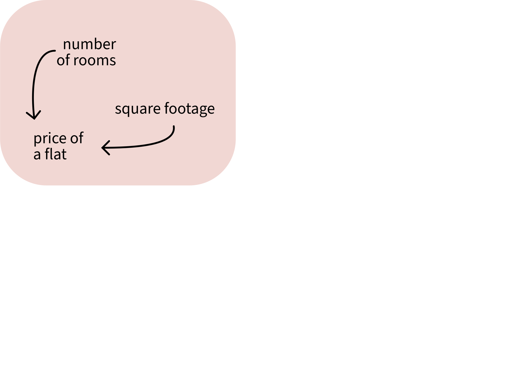
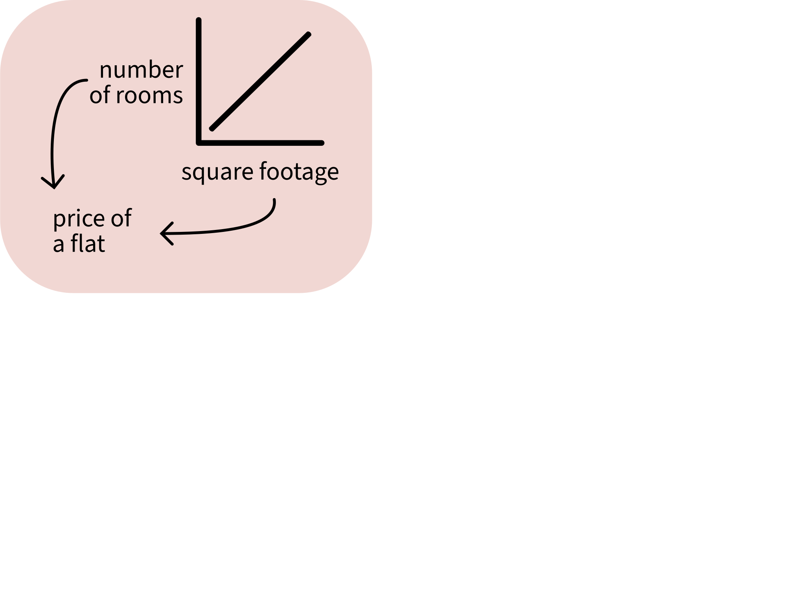
When two predictors are correlated, they contain similar information.
If you know one, you can guess the other.
The model cannot tell which predictor is contributing what information, so its estimates are less precise. In other words, the variance of its estimates increases.
Plotting correlations between predictors
We have a data set called corr_df with an outcome variable y and two predictors x1 and x2.
pairs(corr_df)
In corr_df, x1 and x2 are highly correlated.
The correlation appears as a strong diagonal line.
Plotting correlations between predictors
We have another data set called uncorr_df:
pairs(uncorr_df)
In uncorr_df, x1 and x2 are not very correlated.
The lack of correlation appears as a cloud of data points.
Diagnosing multicollinearity
When predictors are correlated, the variance of the model’s estimates increases.
We can detect this using the Variance Inflation Factor or VIF.
VIF measures how much the standard error of a predictor is increased by correlations with other predictors.
More precisely: \(\sqrt{\text{VIF}}\) = how many times larger the standard error (SE) of each predictor is, compared to a version of the model without the other predictors.
Intepreting VIF:
Below 5 is low, no need to worry.
\(\sqrt{5} = 2.24\), so SE is 2.24 times bigger than it would be if we removed the correlated predictors.
Between 5 and 10 is moderate, a little worrying but OK.
\(\sqrt{10} = 3.16\), so SE is 3.16 times bigger than it would be if we removed the correlated predictors.
More than 10 is big, cause for lots of concern.
VIF in R
We calculate the Variance Inflation Factor in R using vif() from the package car.
Correlated predictors:
m_corr <-lm(y ~ x1 + x2, data = corr_df)car::vif(m_corr)
x1 x2
7.4 7.4
The SE of each predictor is \(\sqrt{7.4} = 2.72\) times bigger than it would be without the other predictors.
Slightly worrisome!
Uncorrelated predictors:
m_uncorr <-lm(y ~ x1 + x2, data = uncorr_df)car::vif(m_uncorr)
x1 x2
1 1
The SE of each predictor is \(\sqrt{1} = 1\) times bigger—so no different at all.
What to do if predictors are correlated
In order of increasing spiciness:
If the correlation isn’t too worrying, then leave the model as-is and report the VIFs.
If the correlations are large, remove one of the correlated predictors from the model—it’s not adding any new information anyway.
In DAPR3: Make a composite predictor that combines the correlated predictors. For example: a sum, an average, or a cleverer technique like Principal Component Analysis.
Check lots (but not all) using check_model()
A few assumption/diagnostic checks are packaged together by check_model(model) from the performance package.
You’ll play with check_model() in the lab.
Note: check_model() is only a partial shortcut.
It leaves out a lot of important checks too.
performance::check_model(m_corr)
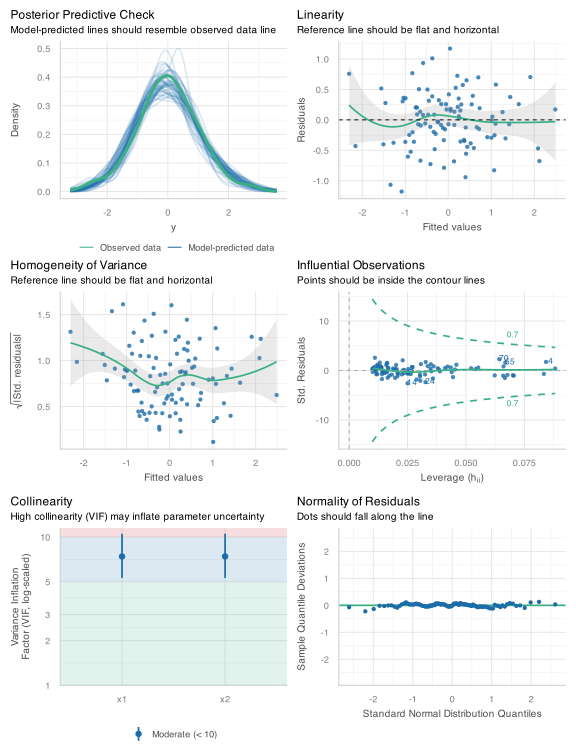
Building an analysis workflow
Revisiting this week’s learning objectives
What does a linear model assume is true about the data that it models? (Four assumptions)
Linearity: The association between predictor and outcome is a straight line.
Independence: Every data point is independent of every other data point.
Normally-distributed errors: The differences between fitted line and each data point (i.e., the residuals) follow a normal distribution.
Equal variance of errors: The differences between fitted line and each data point (i.e., the residuals) are dispersed by a similar amount across the whole range of the predictor.
What three properties of a single data point might affect a linear model’s estimates? How can we diagnose each property?
Unusual outcome value, called “outlyingness”. Diagnose with studentised residuals.
Unusual predictor value, called “high leverage”. Diagnose with hat values.
Unusual outcome and/or predictor value, called “high influence”. Diagnose with Cook’s Distance and COVRATIO.
Revisiting this week’s learning objectives
What relationship between predictors do we want to avoid? How can we diagnose it?
We want to avoid predictors being highly correlated with one another. If they are, we call the situation “multicollinearity”.
When predictors are highly correlated, they contain very similar information, so the model is very uncertain how each one individually is associated with the outcome.
Diagnose multicollinearity with the Variance Inflation Factor (VIF).
This week
Tasks
Attend your lab and work together on the exercises
Support
Help each other on the Piazza forum
Complete the weekly quiz
Attend office hours (see Learn page for details)
Appendix
Hat values: The maths
Hat values ( \(h_i\) ) are used to assess data points’ leverage in a linear model.
In essence: we find the difference between each data point and the mean. We standardise that difference with respect to how big all the differences are and with respect to how many data points we have overall.
For a simple linear model, the hat value for case \(i\) would be


 Ignore them and pretend they don’t exist?
Ignore them and pretend they don’t exist?